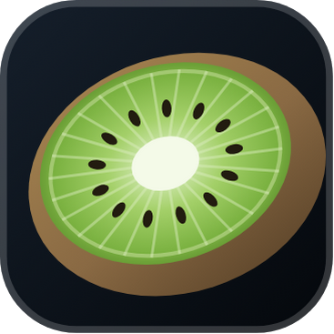

Weathered_Kiwi Beta
Станция ветра у вас в кармане.
Выберите устройство.
Почти готово. Откройте скачанный файл Weathered_Kiwi.apk. Если Android спросит — разрешите установку из этого источника (браузера) и нажмите «Установить».
iPhone/iPad: приложения нет — в домашней сети откройте «Без установки» → «Поделиться» → «На экран “Домой”».
iPhone/iPad: приложения нет — в домашней сети откройте «Без установки» → «Поделиться» → «На экран “Домой”».